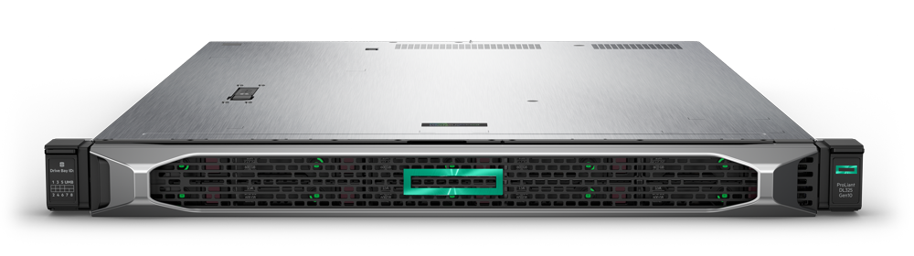

山﨑建設株式会社様
OSのサポート終了を見越し
Windows Server 2016への移行を
BIシステムから先行してスタート
AMD EPYC™プロセッサー搭載、性能と経済性を両立した1ソケットのHPE ProLiant DL325 Gen10サーバーを採用
では選択可能なコア数やメモリー量などのバリエーション、オプションの品揃えなどの情報を素早く確認できたため、作業をスムーズに進められました。その結果、HPE ProLiant DL325 Gen10サーバーを採用することで、サーバーの調達コストを当初想定の6割ほどに抑えることができました。
山﨑建設株式会社
管理本部 人事総務部 情報システム課 課長
田村 貞 氏
重機を使った大規模な機械土工を得意とする山﨑建設では、全国に散らばる工事現場のコスト管理などを担うBIシステムのITインフラを刷新しました。このシステムは、同社が日々の業務を進めていくうえで不可欠な存在であり、全国に散らばる工事現場で発生する入出金の管理や労務費計算のための勤怠管理などに主に利用されています。BIシステムから先行してスタートしたのは、2020年1月に迫ってきたWindows Server 2008のサポート終了を見据え、様々な業務システムを計画的にWindows Server 2016へ移行していくための先行事例を作りたいという狙いからでした。
採用されたのは、最新のAMD EPYC™プロセッサーを搭載したHPE ProLiant DL325 Gen10サーバー。企業規模で利用するシステムの要求仕様を満たしつつ、シングルプロセッサーならではの経済性を備えることが決め手になりました。
「新しいBIシステムでは、それまであった2台の物理サーバーを仮想化で統合する予定でした。高い処理パフォーマンスは求めないけれど、アクセスは会社ごとにネットワークポートを分けたいと、ポートを3基以上備えるシングルプロセッサーサーバーを探しました。しかし、なかなか見つからない。単純なことですが、これがHPE ProLiant DL325 Gen10サーバーにたどり着くための出発点になりました」（田村氏）
採用機種をHPE ProLiant DL325 Gen10サーバーに決定した後は、オンラインストア「」を使ってサーバー構成を細かく検討した、と田村氏は振り返ります。は、購入するためだけのサイトとして思われがちですが、見積ツールとしても多くのニーズに対応する機能を備えています。サイトであるメリットを最大限に発揮し、分かりやすいインターフェイスを選択していくだけで、キャンペーン価格まで適用した見積は24時間365日取得できます。また、サイトで作成した見積・構成ID を基にHPE販売パートナー経由で発注できるのも特長のひとつで、多くのHPE販売パートナーの中からお客様と取引のある販売代理店を選択でき、無駄な工程を踏まずにスムーズな購入が可能です。

「今回のプロジェクトでは、サーバーOSの移行だけでなく、サーバー本体のメーカー変更、仮想化ソフトウェアHyper-Vの初適用、BIソフトウェアのバージョンアップなど、様々なレベルで変化がありました。それだけに大きなトラブルに見舞われるのではと心配していましたが、実際は非常にスムーズに進行しました。HPE ProLiant DL325 Gen10サーバーのITインフラとしての信頼性、安定性は期待以上でした」（田村氏）
導入事例の詳細はこちら山﨑建設株式会社様ご購入のモデル
HPE ProLiant DL325 Gen10
関連リンク
- お客様事例 ― 医療法人HSR名嘉村クリニック様
電子カルテシステム用ファイルサーバーとして、で要件に最適な構成のサーバーを調達 - お客様事例 ― 株式会社GABA様
を利用し短納期で要求仕様のサーバーを調達 - お客様事例 ― 奈良先端科学技術大学院大学様
で仕様を相談しながらスムーズかつ短期間での導入を実現 - お客様事例 ― HPE ProLiant サーバー
すべてのHPE ProLiant サーバー導入事例 - Gen10サーバーで選ぶ
ハードウェアレベルでのセキュリティ対策が必要とされる理由は？